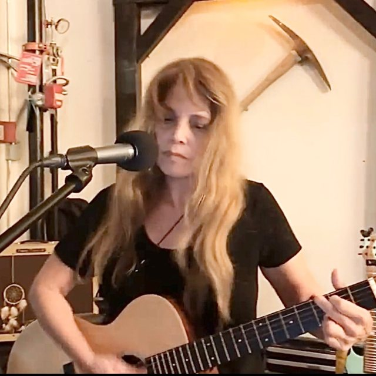
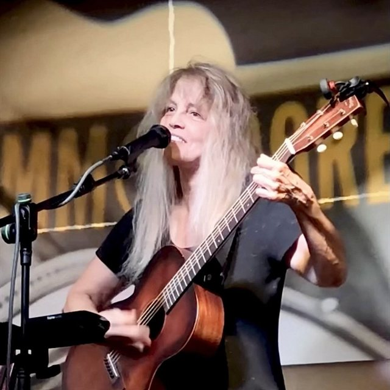
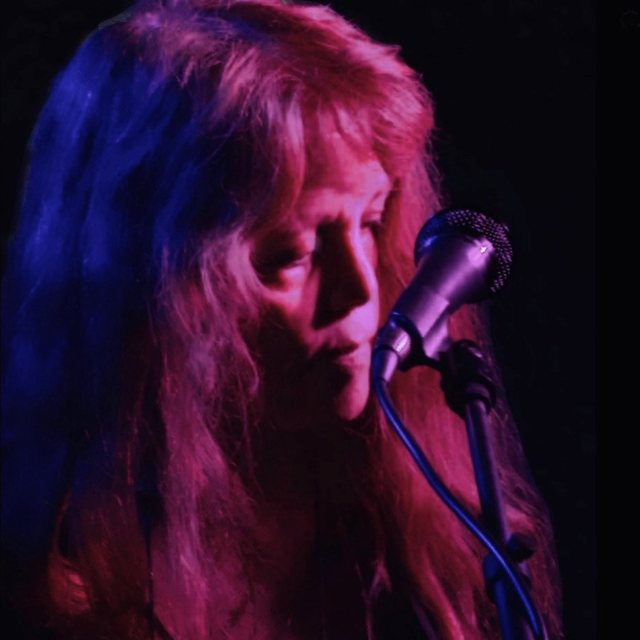
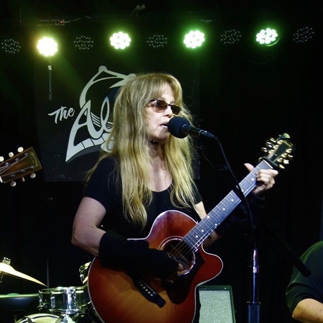
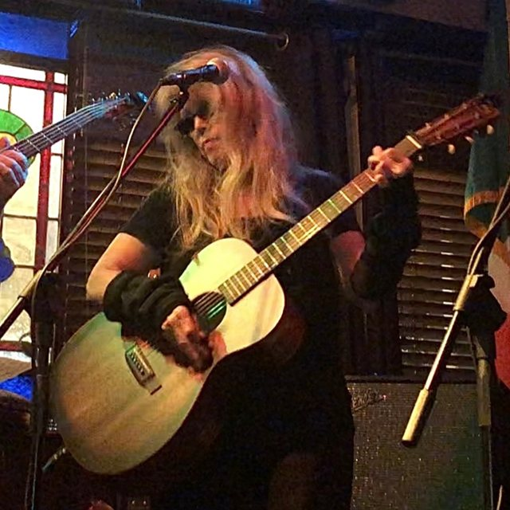
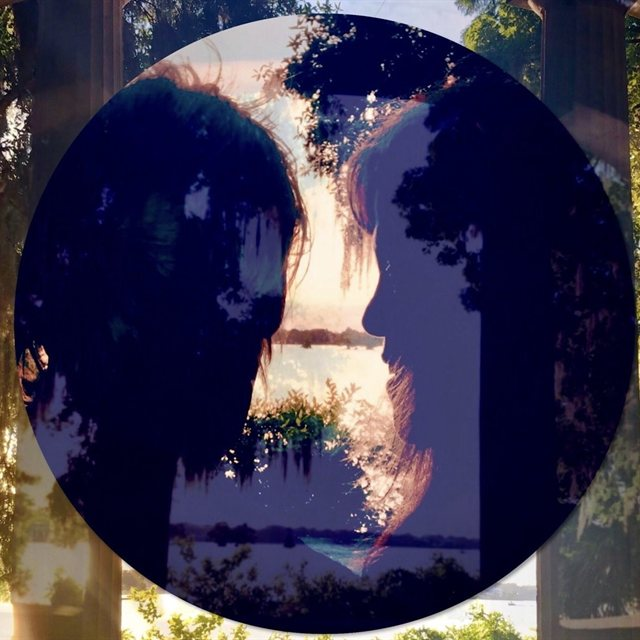
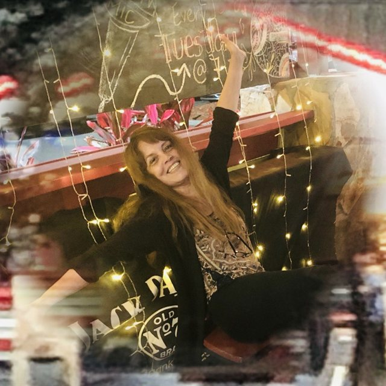
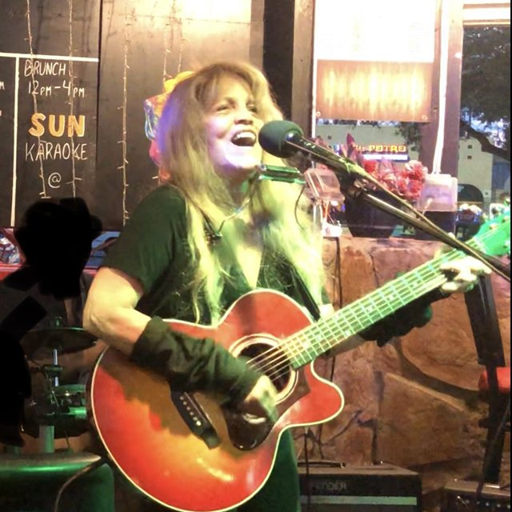
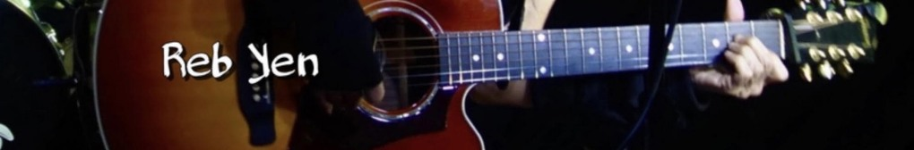

Take Me Crazy
A realistic love song · studio recording · 3:48 · ReverbNation Featured

Original songs. Real stories.
A voice all her own.
Boulder, Colorado singer-songwriter & multi-instrumentalist
Now playing
Original songs
Artist spotlight
3 songs featured on the ReverbNation homepage
Take Me Crazy
Should I?
Gotta Let It Go
Original songs · Real stories
Choose a card to open an original song paired to the moment—or let chance pick one.
Starting over · Suggested song
Written about turning the page after loss or a closed chapter—honoring the years behind you while finding the strength to climb back up and begin again.
“As the pages turn, and your soul is set free… Don’t call it the end; it’s a new beginning.”
Start listening
Featured original · ReverbNation Spotlight
Reb calls it a realistic love song: candid, playful and about accepting one another as we are. Written, arranged and performed by Reb — live performance filmed in Nashville.
A realistic love song · studio recording · 3:48 · ReverbNation Featured

Original live performance · guitar & vocals · 1:34

On loss, remembrance & beginning again · studio recording · 3:03

Original studio remake · all instruments & vocals by Reb · 3:10

Original studio recording · 3:08 · ReverbNation Featured
Original live duet · acoustic guitar, harmonica & vocals · 1:24

About knowing when to let go · studio recording · 3:35 · ReverbNation Featured
Original live recording · guitar & vocals · 2:37
Original live recording · conviction & acoustic rhythm · 3:06
Original studio recording · guitar & vocals · 2:56
Original live performance · vocals & acoustic guitar · 1:49
Original studio recording · guitar, vocals & keyboard · 3:19
Original live recording · finding your dream again · 2:32

Original live recording · acoustic guitar & harmonica · 3:09
Intimate live original · vocals & acoustic guitar · 2:41

Original first-draft recording · raw songwriter work-tape · 2:35

Original live performance · guitar, harmonica & vocals · 3:03
Original collaboration · Reb Yen & Jim O’Rourke · 2:23
Original solo version · stripped-back guitar & vocals · 2:14
Playful live original · upbeat acoustic groove · 1:58
Full-length original recording · complete arrangement · 2:56
Original live version · “Gotta be your own fan” · 2:30
From the stage
Original songs, select covers, real rooms, and the energy of a live performance.
Original · Commodore Grille, Nashville
Original - The Trident, Boulder
Original · Roots Music Project
Acoustic cover - Tandoori Grill, Boulder
Acoustic cover- The Trident, Boulder
Fiddlers Green, Orlando
“Don’t call it the end; it’s a new beginning.”

Meet Reb
Fans and critics describe Reb as a strong vocalist and accomplished musician, playing guitar, keyboard, and harmonica. She performs multiple genres, including Americana, Folk, Country, Pop, Rock, and Indie.
Reb’s performance credits include Walt Disney World, Universal Studios, and New York City’s Lincoln Center, where she performed as a featured artist with the Aman World Music and Dance Ensemble. She has also toured internationally, including two tours of Europe, and performed at the Commodore Grille in Nashville, a venue known for showcasing emerging and established songwriters.
Reb received formal training in singing and vocal technique and has experience as a vocal coach, including professional involvement with the National Association of Teachers of Singing (NATS). Reb Yen uses no AI-generated vocals or instrumentation in her productions. All her tracks feature live vocal performances—including layered vocal tracks—and live-recorded instrumentation, capturing the authenticity of her vocals and musicianship.
Currently based in Boulder, Colorado, Reb periodically performs at local venues, including the St. Julien Hotel, the Roots Music Project, and Bricks on Main. She continues to write and perform original music, sharing her songs and connecting with audiences through live performances.
Every recording features Reb’s live vocal performances—including layered harmonies—and live-recorded acoustic and electric instrumentation.
Featured artist at NYC’s Lincoln Center, Walt Disney World, Universal Studios, Nashville’s Commodore Grille, and two European tours.
Performs on guitar, banjo, keyboard, and harmonica, backed by formal vocal training and NATS coaching experience.
Stages & chapters
Select any stop along Reb’s performance journey
Began her professional performance career as a singer and dancer with the acclaimed Aman World Music & Dance Ensemble.
A few moments along the way
If you're planning a special event and considering live music, I'd be happy to discuss the possibilities. And it's always nice to hear from people who enjoy music!

ReverbNation catalog · 22 original songs
No songs match that search.
Original Songbook & Liner Notes · Music keeps playing
Loading songbook…